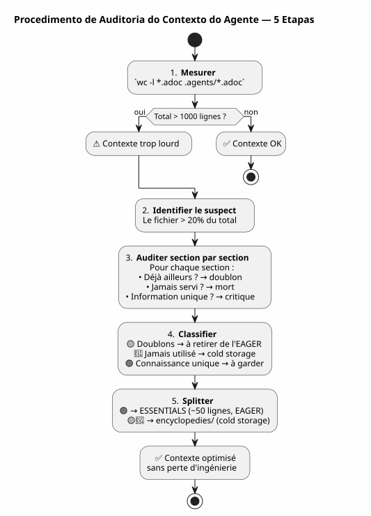

Auditoria de Contexto Agente: Quando Sua Própria Governança se torna o Problema — e Como Repará-la sem perder nada
Publié le 27 April 2026
- A cena: sessão 051, algo está errado
- A auditoria: analisar as 627 linhas
- O medo de perder a engenharia
- A solução : split enciclopédico
- O conteúdo do ficheiro ESSENTIALS
- O resultado: -50% de contexto EAGER
- Por que a pasta se chama `encyclopedies/
- A continuação lógica da série
- O que eu teria feito diferente
- O guia para auditar seu próprio contexto
- Uma governança viva
- Links
Você passou semanas construindo uma governança de agente impecável. Eager/Lazy, procedimento de fim de sessão, backups rotativos. O sistema está funcionando. Então, um dia, o agente fica lento. As respostas ficam diluídas. Você mede: 1414 linhas carregadas automaticamente. E o pior é que o culpado não é o código, nem o backlog, nem os arquivos de sessão. O culpado é o arquivo que documenta seu método.
- tic
-
[]
A cena: sessão 051, algo está errado
30 de abril de 2026, 16h00. Estou em plena sessão sobre`magic-stick`, meu projeto de build da ISO Linux live. O agente Opencode carregou automaticamente meus arquivos Eager como sempre —AGENT.adoc, PROMPT_REPRISE.adoc, .agents/INDEX.adoc. Tudo está normal.
Mas as respostas são mornas. O agente leva dois segundos a mais para raciocinar. Ele esquece um detalhe que tinha sob o nariz três mensagens antes. Não é um crash nem um erro — é uma degradação lenta, do tipo que não se percebe imediatamente.
Eu já tinha vivido isso na sessão 048, quando eu tinha descoberto que os arquivos de governança pesavam 5200 linhas acumuladas. Eu então tinha conceptualizado o mecanismo Hot/Warm/Cold com sua sliding window de 10 sessões, suas ondas frias idênticas, seu sensor com dois gatilhos. O problema estava resolvido. Em teoria.
Mas aqui, estamos na sessão 051. A rotação de backup ocorreu — os arquivos EAGER passaram de 2087 para 500 linhas. Porém, o contexto ainda está pesado. Algo me escapa.
Abro um terminal e digito :
wc -l AGENT.adoc AGENT_MODUS_OPERANDI.adoc PROMPT_REPRISE.adoc \
.agents/INDEX.adoc .agents/SESSIONS_HISTORY.adoc \
.agents/archives/COMPLETED_TASKS_ARCHIVE_2026-04.adoc 287 AGENT.adoc
627 AGENT_MODUS_OPERANDI.adoc
51 PROMPT_REPRISE.adoc
218 .agents/INDEX.adoc
18 .agents/SESSIONS_HISTORY.adoc
213 .agents/archives/COMPLETED_TASKS_ARCHIVE_2026-04.adoc
1414 total1414 linhas. A rotação de backup cortou bem em INDEX, SESSIONS_HISTORY e COMPLETED_TASKS — eles estão limpos. Mas há um elefante na sala que eu não tinha visto:627 linhasem um único arquivo.AGENT_MODUS_OPERANDI.adoc.
Este arquivo, esse é o que escrevi na sessão 1 para documentar a estratégia Eager/Lazy. É o manual do método. E ele se tornou, sozinho, 44% do contexto EAGER.
Failed to generate image: PlantUML preprocessing failed: [From <input> (line 9) ] @startuml skinparam backgroundColor #FEFEFE title Contexto EAGER — 1414 linhas rectangle "AGENT_MODUS_OPERANDI\n**627 linhas (44%)**" as MOD #FFCDD2 rectangle "AGENT.adoc\n287 linhas (20%)" as AG #BBDEFB rectangle "INDEX.adoc\n218 linhas (15%)" as IDX #C8E6C9 rectangle "COMPLETED_TASKS 213 linhas (15%)" as ARC #FFF9C4 ^^^^^ Syntax Error? (Assumed diagram type: activity) @startuml skinparam backgroundColor #FEFEFE title Contexto EAGER — 1414 linhas rectangle "AGENT_MODUS_OPERANDI\n**627 linhas (44%)**" as MOD #FFCDD2 rectangle "AGENT.adoc\n287 linhas (20%)" as AG #BBDEFB rectangle "INDEX.adoc\n218 linhas (15%)" as IDX #C8E6C9 rectangle "COMPLETED_TASKS 213 linhas (15%)" as ARC #FFF9C4 rectangle "PROMPT_REPRISE 51 linhas (4%)" as PRO #E1BEE7 rectangle "SESSIONS_HISTORY 18 linhas (1%)" as HIS #FFE0B2 note bottom of MOD Le fichier qui documente la méthode est devenu le plus gros poste de dépense end note @enduml
A ironia é total. O arquivo projetado para economizar de contexto tornou-se o principal consumidor de contexto. É como se o manual de uso do seu carro pesasse mais que o motor.
A auditoria: analisar as 627 linhas
Decido fazer uma auditoria seção por seção. Não para remover — para compreender o que merece estar em EAGER e o que poderia viver em outro lugar sem perda de conhecimento.
Eis a estrutura exata de`AGENT_MODUS_OPERANDI.adoc`e o que eu encontro:
Seção |
Linhas |
Conteúdo |
Já presente em… |
P1 — Visão geral |
64 |
Problema resolvido, princípios fundamentais, analogia painel de instrumentos vs manual |
— |
P2 — Estrutura dos ficheiros |
97 |
Arborescência, política de carregamento, quando carregar o quê |
— |
P3 — Regras absolutas |
34 |
Git proibido, comandos destrutivos proibidos, segredos proibidos |
|
P4 — Ciclo de vida da sessão |
133 |
Modelo abertura, regras de trabalho, 6 etapas fim de sessão, checklist |
|
P5 — Métricas e limites |
49 |
Sessão ideal (15-30 min, 1-3 ficheiros), sinais de alerta |
— |
P6 — Tipos de sessões |
72 |
Tabela de detecção, formato da proposta, exceções |
— |
P7 — Melhoria contínua |
39 |
Métricas de acompanhamento, revisão semanal |
— |
P8 — Checklist inicialização |
13 |
novo projeto Bootstrap |
— |
P9 — Referências |
30 |
Arquivos de referência, recursos externos |
|
Anexos A+B |
42 |
Glossário, histórico de versões |
— |
O veredicto é irrecorrível:
-
Duplicatas integrais(167 linhas): P3, P4, P9 — tudo já está dentro`AGENT.adoc` ou
INDEX.adoc, frequentemente palavra por palavra -
Nunca consultado em prática(215 linhas) : P5, P6, P7, P8, Anexos — da meta-governança que nunca foi utilizada em nenhuma sessão
-
Conhecimento único(161 linhas) : P1 e P2 — o vocabulário LAZY/EAGER, a analogia, a política de carregamento
Em 627 linhas,382 são barulho. E essas 382 linhas são carregadas a cada início de sessão, consumidas pelo agente, diluindo sua atenção mesmo antes de eu dizer olá.
Failed to generate image: PlantUML preprocessing failed: [From <input> (line 8) ]
@startuml
skinparam backgroundColor #FEFEFE
skinparam defaultTextAlignment center
title Auditoria de AGENT_MODUS_OPERANDI.adoc — 627 linhas
left to right direction
rectangle "🟡 **Duplicados**
^^^^^
Syntax Error? (Assumed diagram type: class)
@startuml
skinparam backgroundColor #FEFEFE
skinparam defaultTextAlignment center
title Auditoria de AGENT_MODUS_OPERANDI.adoc — 627 linhas
left to right direction
rectangle "🟡 **Duplicados**
167 linhas (27%)" as DUP #FFF9C4 {
card "P3 — Regras absolutas
(34 linhas)" as D1
card "P4 — Ciclo de vida\n(133 linhas)" as D2
card "P9 — Referências\n(30 linhas)" as D3
}
rectangle "�🔴 **Nunca consultado**
215 linhas (34%)" as JAM #FFCDD2 {
card "P5 — Métricas\n(49 linhas)" as J1
card "P6 — Detecção
(72 linhas)" as J2
card "P7 — Melhoria
(39 linhas)" as J3
card "P8 — Bootstrap
(13 linhas)" as J4
card "Anexos — Glossário
(42 linhas)" as J5
}
rectangle "�🟢 **Conhecimento único**
161 linhas (26%)" as UNI #C8E6C9 {
card "P1 — Visão geral
(64 linhas)" as U1
card "P2 — Estrutura dos arquivos
(97 linhas)" as U2
}
note bottom of UNI
C'est ÇA qu'il faut garder en EAGER.
Le reste → cold storage.
end note
@enduml
Este diagrama é a chave de tudo. Os duplicados (amarelo) são puro ruído — o agente os lê duas vezes, em dois arquivos diferentes. O nunca consultado (vermelho) é documentação morta — escrito com cuidado, nunca usado. Só o verde contém conhecimento que o agente não pode encontrar em outro lugar.
O medo de perder a engenharia
Neste momento, tenho a evidência diante de mim: devo reduzir`AGENT_MODUS_OPERANDI.adoc`. Mas eu hesito.
Este arquivo, eu escrevi à mão. Cada seção é o resultado de uma lição aprendida em uma sessão real. A parte P3 nasceu de um`rm -rf`acidental em`bakery-plugin`que me custou tokens reais do Firebase. A parte P4 é o resultado de quinze sessões em que eu esquecia de arquivar e perdia o fio. O procedimento em 6 etapas não saiu de um livro — saiu da dor.
Apagar essas seções seria jogar fora o histórico da minha própria engenharia. As lições que as produziram, as sessões durante as quais as descobri, os erros que nunca mais quero cometer. Não é texto — é experiência cristalizada.
É aqui que formulo o princípio que vai orientar a solução:
_ Nunca excluir. Sempre relocalizar.O conhecimento não precisa desaparecer do projeto. Ele apenas precisa não ser carregado automaticamente quando não for necessário. _
A solução : split enciclopédico
O modelo que proponho é simples e se inspira na forma como a Wikipédia cresceu: quando um artigo fica muito longo, não o cortamos — criamos um artigo detalhado e mantemos um resumo no artigo principal.
para`AGENT_MODUS_OPERANDI.adoc`, isso resulta :
-
Extrairas 161 linhas de conhecimento único (P1 + P2) em um novo arquivo`LAZY_EAGER_ESSENTIALS.adoc`— compactado em ~50 linhas, estritamente EAGER
-
renomear
AGENT_MODUS_OPERANDI.adocen.agents/encyclopedies/LAZY_EAGER_ENCYCLOPEDIE.adoc— o arquivo original de 627 linhas, preservado intact, em armazenamento a frio -
Nunca carregaro arquivo enciclopédia automaticamente — ele está lá para o ser humano, para a destilação futura, para o agente que será invocado daqui a seis meses com um modelo melhor
Failed to generate image: PlantUML preprocessing failed: [From <input> (line 8) ]
@startuml
skinparam backgroundColor #FEFEFE
skinparam defaultTextAlignment center
title Split Enciclopédico — AGENT_MODUS_OPERANDI
left to right direction
rectangle "**AGENT_MODUS_OPERANDI.adoc**
^^^^^
Syntax Error? (Assumed diagram type: class)
@startuml
skinparam backgroundColor #FEFEFE
skinparam defaultTextAlignment center
title Split Enciclopédico — AGENT_MODUS_OPERANDI
left to right direction
rectangle "**AGENT_MODUS_OPERANDI.adoc**
627 linhas
(antes do split)" as BEFORE #FFCDD2 {
}
rectangle " " as ARROW1
rectangle " " as ARROW2
rectangle "**LAZY_EAGER_ESSENTIALS.adoc**
**~50 linhas — EAGER**" as ESS #C8E6C9 {
card "P1 condensada
(15 linhas)" as E1
card "P2 condensada\n(35 linhas)" as E2
}
rectangle ".agents/encyclopedies/**\n**LAZY_EAGER_ENCYCLOPEDIE.adoc**\n627 linhas — COLD" as ENC #BBDEFB {
card "P1 para Anexos
(integrais, intactos)" as C1
}
BEFORE -[#4CAF50]-> ESS : "Extração de
o conhecimento crítico"
BEFORE -[#2196F3]-> ENC : "Preservação integral
da engenharia"
note bottom of ESS
Chargé automatiquement
en début de session
→ L'agent comprend le vocabulaire
end note
note bottom of ENC
Jamais chargé automatiquement
Consultable par l'humain
Matériau brut pour distillation future
end note
@enduml
O nome`encyclopedies/`Não é insignificante. Uma enciclopédia não é um dossiê de arquivos — é uma coleção de conhecimento organizada, consultável mas não portátil. Não se lê a Encyclopédie Universalis no metrô. Guardamo-la na biblioteca, e vamos lá quando temos uma pergunta específica.
É exatamente o papel desta pasta: uma biblioteca de referência fria, estruturada, exaustiva — que o agente não toca automaticamente.
O conteúdo do ficheiro ESSENTIALS
Aqui está como o novo arquivo se parece concretamente`LAZY_EAGER_ESSENTIALS.adoc`, extraído e compactado a partir de P1 e P2 :
= Stratégie LAZY/EAGER — Principes Essentiels
[abstract]
Ce fichier définit la stratégie de gestion du contexte agent.
Chargé automatiquement (EAGER) en début de session.
== Principes
|===
| EAGER | LAZY
| Tableau de bord | Manuel du propriétaire
| Chargé automatiquement | Chargé sur demande
| <= 100 lignes, <= 10k tokens | Illimité, détaillé
| Règles absolues, mission courante | Archives, historique, références
|===
== Politique de Chargement
|===
| Fichier | Type | Quand charger
| PROMPT_REPRISE.adoc | EAGER | Début session (auto)
| *_ESSENTIALS.adoc | EAGER | Début session si EPIC active
| .agents/INDEX.adoc | EAGER | Début session (auto)
| *_REFERENCE.adoc | LAZY | Sur besoin (détails architecture)
| .agents/sessions/N-*.adoc | LAZY | Sur demande (détails session)
| .agents/encyclopedies/*.adoc | COLD | Jamais auto (humain seulement)
|===
== Comment l'Agent Sait Quoi Charger
Début session → PROMPT_REPRISE + INDEX + ESSENTIALS actifs.
Besoin de détails → charger les *_REFERENCE et sessions/ en LAZY.
Connaissance froide → encyclopedies/, jamais automatique.Cinquenta linhas. É isso que o agente precisa para entender a mecânica. Tudo o mais — o histórico das lições, as analogias detalhadas, os procedimentos passo a passo, os anexos — vive na enciclopédia.
E o mais importante:nada foi excluído. Os 627 linhas de engenharia ainda estão lá, em`.agents/encyclopedies/LAZY_EAGER_ENCYCLOPEDIE.adoc`. Elas estão apenas guardadas na biblioteca, em vez de no balcão de trabalho.
O resultado: -50% de contexto EAGER
Antes do split :
287 AGENT.adoc
627 AGENT_MODUS_OPERANDI.adoc
51 PROMPT_REPRISE.adoc
218 .agents/INDEX.adoc
18 .agents/SESSIONS_HISTORY.adoc
213 .agents/archives/COMPLETED_TASKS_ARCHIVE_2026-04.adoc
1414 totalApós o split :
287 AGENT.adoc
50 LAZY_EAGER_ESSENTIALS.adoc ← remplace 627 lignes
51 PROMPT_REPRISE.adoc
218 .agents/INDEX.adoc
18 .agents/SESSIONS_HISTORY.adoc
213 .agents/archives/COMPLETED_TASKS_ARCHIVE_2026-04.adoc
837 total ← -41%Failed to generate image: PlantUML preprocessing failed: [From <input> (line 6) ] @startuml skinparam backgroundColor #FEFEFE title Contexto EAGER após split enciclopédico — 837 linhas (-41%) rectangle "AGENT.adoc 287 linhas (34%)" as AG #BBDEFB ^^^^^ Syntax Error? (Assumed diagram type: activity) @startuml skinparam backgroundColor #FEFEFE title Contexto EAGER após split enciclopédico — 837 linhas (-41%) rectangle "AGENT.adoc 287 linhas (34%)" as AG #BBDEFB rectangle "INDEX.adoc 218 linhas (26%)" as IDX #C8E6C9 rectangle "COMPLETED_TASKS\n213 linhas (25%)" as ARC #FFF9C4 rectangle "PROMPT_REPRISE 51 linhas (6%)" as PRO #E1BEE7 rectangle "ESSENTIALS 50 linhas (6%)" as ESS #A5D6A7 rectangle "SESSIONS_HISTORY\n18 linhas (2%)" as HIS #FFE0B2 note bottom of ESS De 627 → 50 lignes 577 lignes d'ingénierie préservées en cold storage Rien de perdu. Tout de relocalisé. end note @enduml
O maior consumidor (AGENT_MODUS_OPERANDI, 627 linhas) foi substituído por um arquivo de 50 linhas. O ganho é imediato: 577 linhas de contexto liberadas. O agente respira.
E dentro`.agents/encyclopedies/`, o arquivo original de 627 linhas espera. Intacto. Com todas as suas seções — incluindo aquelas que são duplicatas, incluindo aquelas que nunca foram usadas. Porque um dia, um modelo melhor ou um cientista de dados humano quererá cruzar esses ângulos, essas redundâncias assumidas, essas lições aprendidas. E nesse dia, a matéria-prima estará lá.
Por que a pasta se chama `encyclopedies/
A escolha do nome não é cosmética. Ele codifica a filosofia do mecanismo.
Um arquivo.archives/) contém dados históricos organizados cronologicamente — como os COMPLETED_TASKS mensais. Um backup (backup/) é um snapshot com carimbo de data/hora — uma cópia de segurança de um estado passado.
Uma enciclopédia, é outra coisa. É uma coleção de conhecimento temático, estruturada por assunto, exaustiva mas não linear. Não se lê uma enciclopédia do início ao fim. início ao fim. Mergulha-se nela para responder a uma pergunta específica.
É exatamente o contrato deste dossiê :
Dossiê |
Função |
Acesso |
Granularidade |
|
Dados históricos (tarefas concluídas por mês) |
LAZY, estruturado |
Cronológico |
|
Snapshots frios (ondas de 10 sessões) |
FRIO, cópia integral |
cronológico |
|
Conhecimento temático exaustivo (metodologia, padrões) |
FRIO, nunca automático |
Temática |
Esta distinção evita o fourre-tout. Cada arquivo sabe onde deve viver de acordo com o que contém, não de acordo com quando foi criado.
A continuação lógica da série
Se você leu os dois primeiros artigos, eis como as três peças se encaixam:
Failed to generate image: PlantUML preprocessing failed: [From <input> (line 9) ]
@startuml
skinparam backgroundColor #FEFEFE
skinparam defaultTextAlignment center
skinparam wrapWidth 220
title Trilogia da Governança do Agente
left to right direction
package "�📖 **Artigo 0108**
^^^^^
Syntax Error? (Assumed diagram type: class)
@startuml
skinparam backgroundColor #FEFEFE
skinparam defaultTextAlignment center
skinparam wrapWidth 220
title Trilogia da Governança do Agente
left to right direction
package "�📖 **Artigo 0108**
Estratégia Eager/Lazy" as A1 #E8F5E9 {
card "agente de memória
entre sessões" as M1
card "Arquivos EAGER\n(auto-carregados)" as M2
card "Arquivos LAZY\n(sob demanda)" as M3
card "Procedimento de 6 etapas" as M4
}
package "🧊 **Artigo 0110**
Mecanismo Hot/Warm/Cold" as A2 #FFF9C4 {
card "Envelhecimento
do contexto" as V1
card "Janela deslizante
10 sessões" as V2
card "Onda fria
idêntica" as V3
card "Sensor de
dois gatilhos" as V4
}
package "🔍 **Artigo 0111**\nAuditoria + Solução Enciclopédica" as A3 #BBDEFB {
card "Auditoria dos ficheiros\nEAGER" as E1
card "Identificação\ndo desperdício" as E2
card "Dividir
ESSENTIALS/enciclopédia" as E3
card "Preservação
da engenharia" as E4
}
A1 --> A2 : "A memória cresce
→ é preciso um mecanismo
de envelhecimento"
A2 --> A3 : "O envelhecimento não é suficiente
→ é necessário auditar o que
merece estar em EAGER"
note bottom of A3
✅ Les trois couches sont en place
sur 6 projets actifs
end note
@enduml
-
0108responde a : «Como dar uma memória ao agente entre duas sessões?
-
0110responde a : « Como impedir que essa memória afogue o agente ?
-
0111responde a: « E se o problema não for o tamanho dos arquivos, mas o que temos escolhido de colocar em EAGER ?
O primeiro artigo construiu a estrutura. O segundo adicionou o mecanismo de envelhecimento. O terceiro audita o conteúdo — e descobre que a própria metodologia se tornou o problema.
O que eu teria feito diferente
Retrospectivamente, vejo o erro de projeto inicial.`AGENT_MODUS_OPERANDI.adoc`a foi criado como um documento único — um manifesto. Essa foi a abordagem correta para formalizar o pensamento. Mas uma vez que o pensamento foi formalizado, o documento deveria ter sido dividido imediatamente: o essencial em EAGER, o exaustivo em cold.
Não o fiz porque estava orgulhoso do documento. 627 linhas de engenharia pura, escritas à mão, cada seção fruto de uma lição de sessão. Era minha obra. E, como todo autor, tive dificuldade em cortá-lo.
A lição:Não é porque um documento é bom que ele deve ser carregado automaticamente. A qualidade do conteúdo não tem qualquer relação com sua relevância para o contexto imediato do agente.
Hoje, a regra é simples: todo documento com mais de 100 linhas no contexto EAGER é um suspeito. Ele merece uma auditoria. Não uma condenação — uma auditoria. E a questão nunca é « devemos exclu‑lo? » mas « devemos carregá‑lo a cada sessão?
O guia para auditar seu próprio contexto
Se você seguiu os dois primeiros artigos e implementou sua própria governança Eager/Lazy, aqui está um procedimento de auditoria em cinco etapas:
-
Medir:`wc -l`em todos os seus arquivos EAGER. O total deveria ser menos de 1000 linhas.
-
Identificar o maior: o arquivo que pesa mais de 20% do total é o suspeito número um.
-
Auditar seção por seção: para cada seção, pergunte-se « Essa informação já está em outro lugar? O agente já leu isso em outro arquivo? Isso foi usado nas últimas 5 sessões?
-
Classificador: duplicado, nunca usado, conhecimento único.
-
Divisor ou relocalizar: o que é único e crítico → ESSENTIALS compactado. Tudo o resto →
encyclopedies/.

Este procedimento leva 15 minutos. Em um projeto de 50 sessões, ele economiza centenas de tokens por sessão futura. O ROI é imediato.
Uma governança viva
O que esta série de três artigos me ensinou é que a governança de agentes não é um produto final. É unorganismo vivo. Ela cresce com o projeto. Ela pega doenças de crescimento. Ela precisa de check-ups regulares.
Sessão 048 revelou que os arquivos estão inflando. Sessão 051 revelou que a própria metodologia está inflando. Sessão 060 provavelmente revelará outra coisa. É normal. É saudável. Uma governança que nunca se questiona é uma governança morta.
Os três mecanismos implementados — Eager/Lazy, Hot/Warm/Cold, split enciclopédico — formam um sistema de defesa em profundidade contra a saturação do contexto. Nenhum é suficiente por si só. Juntos, eles se complementam :
-
Ansioso/Preguiçosoestrutura a informação por disponibilidade
-
Quente/Morno/Frioestrutura a informação pela frescura
-
Auditoria enciclopédicaEstrutura a informação por densidade
Failed to generate image: PlantUML preprocessing failed: [From <input> (line 6) ] @startuml skinparam backgroundColor #FEFEFE skinparam nodeBackgroundColor #E3F2FD title Defesa em Profundidade contra a Saturação do Contexto node "**Contexto Agente** ^^^^^ Syntax Error? (Assumed diagram type: sequence) @startuml skinparam backgroundColor #FEFEFE skinparam nodeBackgroundColor #E3F2FD title Defesa em Profundidade contra a Saturação do Contexto node "**Contexto Agente** ~800 linhas saudável" as CTX #C8E6C9 node "Camada 1\n**EAGER / LAZY**" as C1 #BBDEFB node "Camada 2\n**HOT / WARM / COLD**" as C2 #BBDEFB node "Camada 3 ESSENCIAIS / ENCICLOPÉDIA" as C3 #BBDEFB CTX --> C1 : "Estrutura por\n**disponibilidade**" CTX --> C2 : "Structure por **frescor**" CTX --> C3 : "Estrutura por **densidade**" note bottom of C3 Les trois couches sont nécessaires. Aucune n'est suffisante seule. end note @enduml
Com essas três camadas, o contexto do agente sobre`magic-stick`passou de 2087 linhas (antes de qualquer otimização) para cerca de 800 linhas — uma divisão por 2,6. Sem ter perdido uma única linha de documentação, um único arquivo de sessão, uma única lição aprendida.
Tudo está aqui. Só melhor organizado.
Links
-
Artigo 0108 — Estratégia Eager/Lazy :Governar um agente IA com AsciiDoc
-
Artigo 0110 — Mecanismo Hot/Warm/Cold :Janela Deslizante e Onda Fria
-
Meu site: https://cheroliv.com
-
O projeto`magic-stick`: https://github.com/cheroliv/magic-stick
O conhecimento não precisa desaparecer. Ele apenas precisa não ser carregado quando não for necessário.